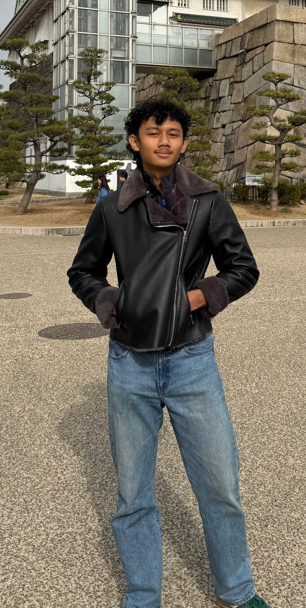

PIKIRA
Academic Copilot for Indonesian Schools
Let teachers teach again. Give principals visibility into academic quality.
Academic Copilot for Indonesian Schools
Let teachers teach again. Give principals visibility into academic quality.


We'd rather answer them here than dodge them in the meeting.
Pre-launch, yes. Pre-work, no. In 4 weeks we talked to 2 principals and 10 teachers, registered a PT PeroranganIndonesian sole proprietorship company, built 2 working AI features (ATP generation, Modul Ajar generation), and hired a designer with UI in active development. We have 2 schools in active conversation. Our plan: research visits starting April (observation, workflow mapping), prototype testing May-June, formal design partnershipsSchools co-design the product, providing feedback in exchange for better pricing in July-August when the new academic year starts. Paid pilots follow once the product is proven. We know what we're doing next.
Existing players (SokratesCompetitor: school management system for private schools, QuintalCompetitor: school admin & academic platform, PijarCompetitor: Kemendikbud-backed LMS, free for public schools) digitize the output: attendance, grades, raporStudent report card. Pikira digitizes the workflow that produces them: curriculum planning, assessment creation, grading. That's a foundation difference, not a feature gap you can close with a plugin. Their data models, UX, and architecture assume teachers do the work and software captures the output. Adding generation to a recording system is a rebuild, not a feature.
Two layers. First, architectural: our curriculum pipeline is structured data that AI can reason over. Competitors would need to rebuild from scratch. Second, context. Pikira pulls from public textbook PDFs (Buku Sekolah ElektronikFree government-published digital textbooks), the teacher's own ATP, their Modul Ajar, their past interactions. ChatGPT generates generic lesson plans. Pikira generates contextual ones, aligned to the specific kurikulumCurriculum framework, the specific school's ATP, the specific teacher's style. That context compounds with every use, and you can't replicate it without the same integrated data layer. AI grading in Bahasa Indonesia with rubric alignment is genuinely hard - that's our biggest technical risk, and we're mitigating by grounding AI with the teacher's own materials and rubric definitions.
Adoption resistance at scale. PijarKemendikbud-backed LMS was deployed at one school but only 12 of ~70 teachers actually used it. Teachers default to what they know: Excel, Word, WhatsApp. Our bet is that covering enough of their workflow makes switching cost worth it. But we haven't proven that yet. That's what pilots are for.
Success: 3-5 schools on formal pilots, teachers using it daily, 2-3 referral intros from principals. What kills us: teachers try it and churn because AI output quality isn't good enough, or onboarding friction is too high and schools stall after signing up. The honest risks: is the gap worth paying for when teachers already cope with PMMPlatform Merdeka Mengajar: free government platform for teachers and ChatGPT? If teachers don't use it, nothing works - 70% are still building IT fluency. And incumbents: Telkom has distribution, BINUS has relationships. Speed to the feedback loop - where school data makes the copilot smarter - is the moat.
If any of this sounds interesting, let's talk.
Muttaqin's WhatsApp: wa.me/6281218722101